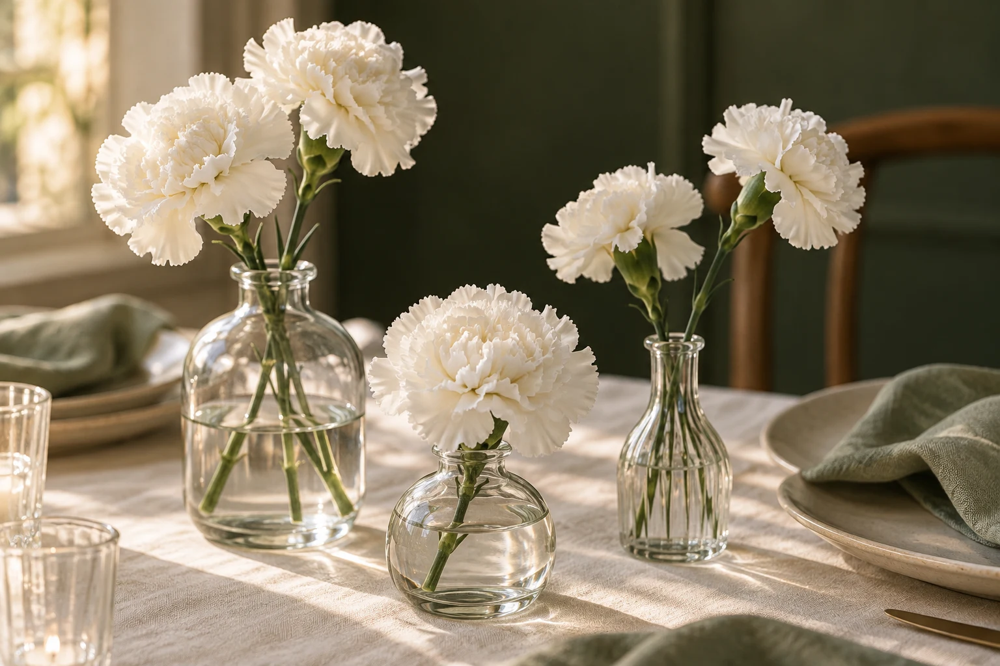
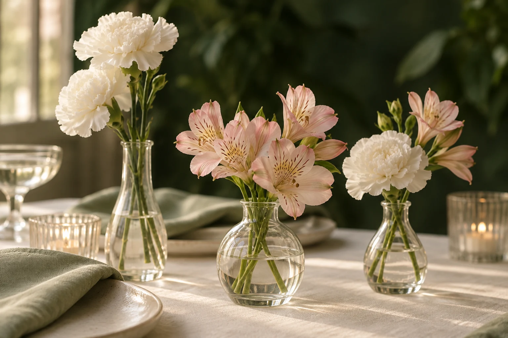
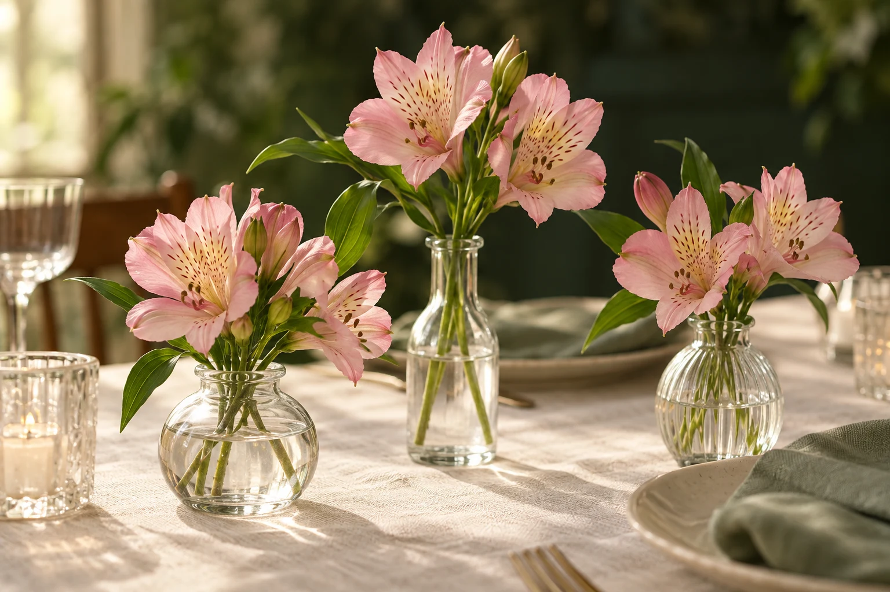
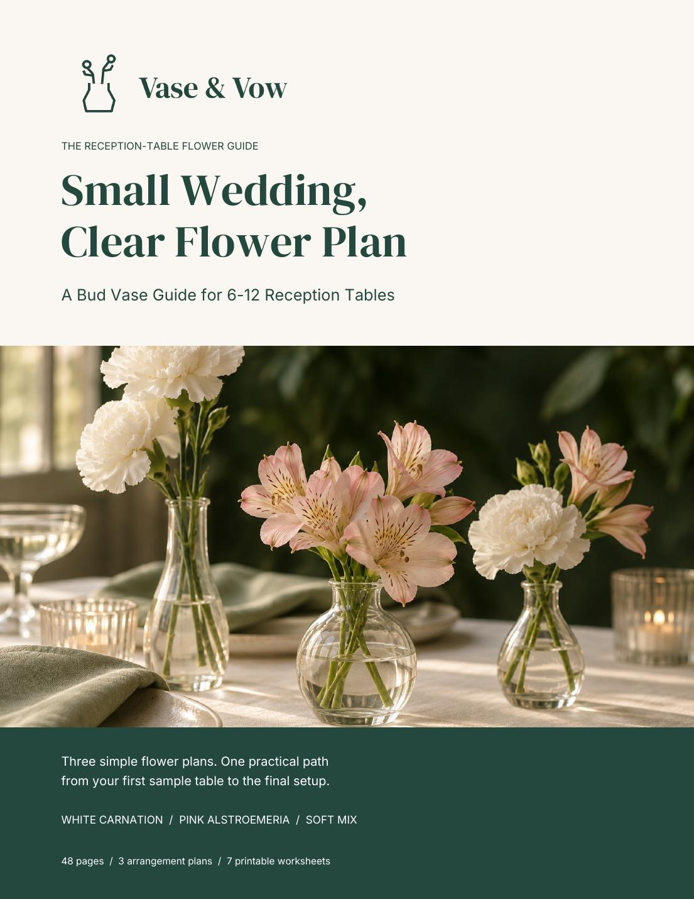
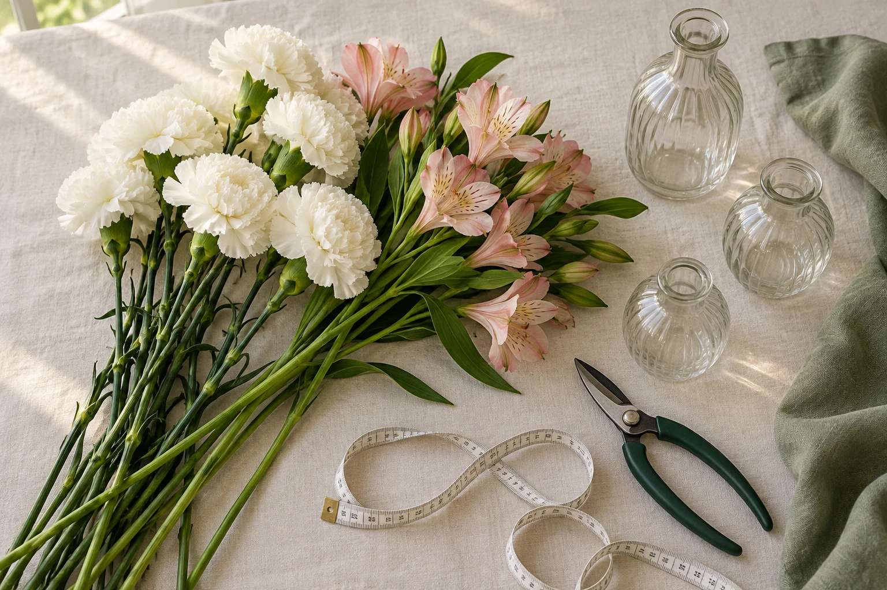

01White Carnation
Two white carnation stems per vase.
YOUR WEDDING TABLES. YOUR CLEAR PLAN.
Turn your flower inspiration into a shopping list and a setup plan for 6–12 reception tables. Choose your composition, work out your quantities, and give your helpers clear instructions.
48-page PDF · 3 flower plans · 7 printable worksheets
$29 USD · One-time purchase · Materials purchased separately

Small Wedding, Clear Flower Plan
A Bud Vase Guide for 6–12 Reception TablesLess guessing. More gathering.
A beautiful table photo doesn’t tell you how many stems to order, what to pack, or which jobs to give your helpers.
Bring a plan to your supplier, a list to your shopping trip, and written instructions to your helpers. The guide gives you a place to work through each decision before the wedding.
Three simple starting points
Choose one composition. Make a sample table. Then work out the supplies for your celebration.

01Two white carnation stems per vase.

02Two pink alstroemeria stems per vase.
One white carnation and one pink alstroemeria stem per vase.
Each written plan uses four vases per table. Start with one sample table to check your flowers, vase sizes, and layout.
TRY A SMALL PART OF THE PLAN
Start with the guide’s base quantities. Then use the worksheets to confirm supplier bunch sizes, your sample table, and any extra stems you choose to allow.
See the actual calculation worksheet64 white carnation stems
4 vases per table · 2 flower stems per vase
Base quantities only; extras and greenery are not included.

YOUR GUIDE · DIGITAL PDFBeautiful ideas. Useful pages.
Keep the flower plans, quantity worksheets, shopping checks, and setup instructions together. One downloadable guide to print, annotate, and share with your event helpers.
No email. Just a look inside.
These are real pages from the guide. Preview the instructions and a printable worksheet before you decide.
Three pages: project fit, a flower-plan assembly page, and a quantity worksheet.
Open the 3-page sample ↗PDF · Sample only · Print or read on screenOne clear sequence

Compare the three compositions and select a starting point for your tables.
Work out vase and stem quantities. Confirm bunch sizes and availability with your supplier.
Check your actual flowers, vases, table layout, holding conditions, and transport.
Record responsibilities, packing details, and final setup checks before the event.
Seven worksheets. One PDF.
Print the pages you need. Keep a master set. Give your helpers the instructions relevant to their jobs.
A focused guide
This is a digital planning guide. Flowers, vases, bouquets, arches, flower deliveries, and personalized design services are not included.
Small Wedding, Clear Flower Plan
One purchase. A guide you can keep.
Worksheets you can print and use.
THE COMPLETE DIGITAL GUIDE
Review your order, then continue to secure payment through Gumroad. 7-day money-back guarantee.
Preview the 3-page sample ↗Digital PDF. No physical items included.
Access your download after successful payment. Any applicable taxes are shown at checkout.
Before you decide
The guide is written for beginners. You will still need helpers, a suitable workspace, and a sample table to check your actual flowers, vases, and setup conditions.
No. You receive a digital PDF guide. You purchase flowers, vases, tools, and any other materials separately.
The guide focuses on flowers in small vases for 6–12 reception tables. It does not cover bouquets, arches, hanging installations, or full-service floral design.
Flowers vary by cultivar, supplier, and opening stage. Vase openings and stability also vary. A different combination needs its own full sample table; do not assume a one-for-one substitution will work.
No. It is a 48-page PDF, with seven printable worksheets inside. There are no video lessons, app tools, Canva templates, or personalized design services included.
Yes. The worksheets are designed for US Letter paper, 8.5 × 11 inches, and can be filled in by hand. They are not advertised as interactive digital forms.
Yes. Check your actual flowers, vase openings, table layout, holding conditions, and transport before buying the full quantities. The guide includes a worksheet for recording your sample-table checks. The compositions have not been physically validated for this edition.
No. Costs depend on flowers, suppliers, materials, labor, and conditions. The guide helps organize quantities and purchases; it does not promise a fixed saving or a particular floral result.
After successful payment, Gumroad provides access to the complete PDF and sends a receipt email with an access link. Download the guide and print the worksheets you need.
The product offers a 7-day money-back guarantee. Contact Vase & Vow through your Gumroad receipt for support or to request a refund. Applicable rights remain unaffected.
FOR THE TABLES YOU’LL GATHER AROUND